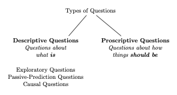

Descriptive v. Prescriptive Questions#
In the chapters that follow, we will discuss Exploratory, Passive-Prediction and Causal in detail. First, though, we must discuss another important concept: the distinction between descriptive and prescriptive questions.
Descriptive Questions are questions about the state of the world and include all the questions and examples we’ve covered so far in this book. “What kinds of users are clicking our ads?” and “Do high-income and low-income countries emit similar amounts of carbon dioxide?” are examples of Descriptive Questions. And because Descriptive Questions are questions about objective reality,[1] they have right and wrong answers (at least in principle. It may be hard to evaluate whether a given attempt to calculate the answer is actually right or wrong).
But Descriptive Questions are not the only type of question you will come across in your career.
Prescriptive Questions are questions about how the world should be, not how it actually is. “Should higher income and lower income countries be expected to meet the same carbon emission reduction standards?” or “Do high-income countries have a moral obligation to provide tuberculosis drugs to developing countries for free (or at cost)?” are both examples of Prescriptive Questions.
Unlike Descriptive Questions, Prescriptive Questions don’t have correct answers. That’s because answers to Prescriptive Questions require evaluating the desirability of possible outcomes, which can only be done in the context of a moral/ethical system of values. And as there is no “correct” system of values (in the sense that there is no single universally accepted system of morality), there can be no right or wrong answers to Prescriptive Questions, even in principle.

Note
The terms “Prescriptive” and “Descriptive” are commonly used for these concepts in the natural sciences, but different academic silos sometimes use different terms. Social scientists, for example, tend to prefer the terms “Positive” in place of Descriptive and “Normative” instead of Prescriptive. These are only difference in nomenclature, however, not substantive meaning.
The focus of this book is on Descriptive Questions. This is not because Prescriptive Questions are unimportant — indeed, one can easily make the argument that they are more important than Descriptive Questions. Moreover, as we will discuss in future chapters, they will arise frequently in your career as a data scientist. No, the reason that Descriptive Questions are the focus of this book is that those are the only questions data science tools can answer, and thus answering Descriptive Questions is the domain in which the data scientist has a clear comparative advantage.
Now, to be clear, none of this is to mean that the answers you generate as a data scientist will not have a bearing on how people answer Prescriptive Questions. Data science would be a very dull field indeed if it could not speak to the ethical issues of our day. Data science is powerful precisely because it can inform how we answer Prescriptive Questions by helping us understand the relevant stakes. Data science tools can help decision-makers understand the likely consequences of different courses of action, information that can help people make informed decisions about what outcomes they feel are most desirable. To illustrate, let’s consider a few vignettes.
Opioid Reductions#
Suppose you have been hired by a medical regulatory board concerned about the rise in opioid overdoses. They are debating whether they should (there’s that magic word!) make it harder for patients to get opioids. Fundamentally, however, they worry that while restrictions on opioids may reduce overdoses and addiction, they may also prevent some patients with very real pain conditions from getting the care they need.
Why are they stuck? Well, there may be two causes:
They may be unsure of the relative moral weight to give preventing overdoses versus ensuring appropriate patient access to opioids, and/or
they may also be unsure about how much opioid regulations that reduce overdoses by a certain amount would limit access for patients in need.
The first of these questions is a pure Prescriptive Question — if you could prevent one overdose death at the expense of preventing 10 patients in pain from getting the opioids they need, would you accept that trade-off?
But the second is actually a Descriptive Question that you — the data scientist — can answer! You could study policies that have been implemented in the past and come up with a rigorous estimate of how much opioid regulations that reduce overdoses also reduce access for patients in need. You could also evaluate different kinds of policies to figure out which is most efficient — maybe some policies (like not allowing any opioid prescriptions at all) are good at stopping overdose deaths but also really limit appropriate access, while other policies are similarly good at reducing overdoses but have a much smaller effect on limiting access.
The Example of Carbon Emissions#
A profoundly difficult Prescriptive Question in debates over carbon reduction is whether developing countries should be held to the same emission reduction targets as more developed countries. On the one hand, developing countries like China and India are the source of most current growth in carbon emissions, and so policies that do not apply to developing countries are unlikely to prevent many of the worst climate change outcomes. On the other hand, these countries produce radically less carbon per capita than Europe or the United States, and the industrial growth creating those emissions has been a major factor in lifting billions of people out of extreme poverty.
Hard choices indeed! How does one weigh the improvements in the quality of life of those in extreme poverty against the possible consequences of even greater climate catastrophes?
While that question, in part, is a Prescriptive Question that no regression can answer, data scientists can bring data to bear on this question indirectly by helping everyone understand the potential consequences of different carbon targets for developing countries, as well as the feasibility of different strategies for carbon reduction. A data scientist could, for example:
Evaluate the effectiveness of different messages politicians in the US and Europe could use to convince their constituents to support greater carbon reduction targets,
Quantify the magnitude of the effect on global warming caused by different emissions targets for developing countries to help politicians in developing countries weigh the poverty-reducing benefits of carbon-intensive industrialization against the likely direct effect of flooding, droughts, or more severe storms on their own citizens, or
Estimate the cost-effectiveness of developed countries sharing lower emissions industrial technologies with developing countries to ameliorate the tradeoff between poverty reduction and emissions.
In each of these cases, the data scientist is only answering Descriptive Questions, but in doing so they are helping everyone better understand the consequences of their decisions, and in doing so (hopefully) help the world to make more informed decisions about the trade-offs they are making.
Recap#
Answering Descriptive Questions — questions about how the world is or would be in different scenarios — is the core competency of the data scientist. In the chapters that follow, we will explore in detail three different kinds of Descriptive Questions: Exploratory, Passive-Prediction, and Causal Questions.
While these are the only types of questions that data science tools can answer directly, it is important for you, the data scientist, to also recognize when you encounter Prescriptive Questions — that is, questions about how the world should be, or what we ought to do. These questions can only be answered with respect to a system of values, and as such, do not have right or wrong answers, and cannot be answered by statistical means. Nevertheless, as a data scientist, you are well-prepared to help others (and yourself!) make more informed choices when they decide how to answer Prescriptive Questions for themselves.